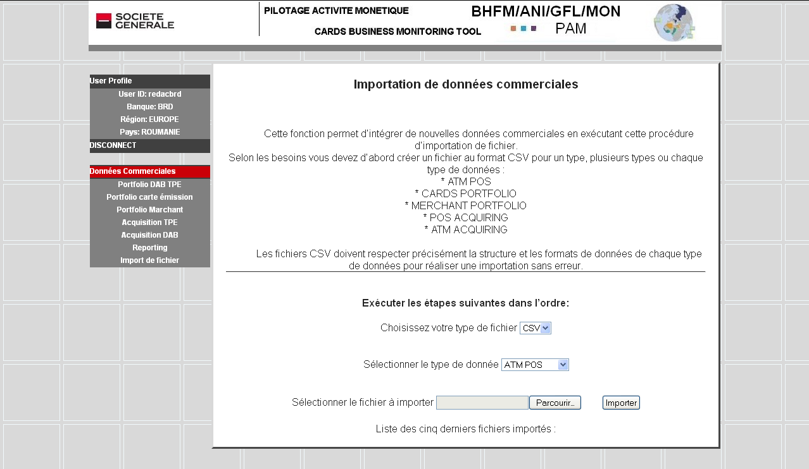

Tables des matières Fermer la fenêtre
Cette fonction sera utilisée pour les filiales qui font une extraction automatique des données de leur système monétique et peuvent composer des fichiers CSV contenant les données commerciales. Ces fichiers doivent respecter très précisément le format donné pour éviter toute erreur d’importation.
Dans ces fichiers, il faut veiller à ce que le semestre, l’année et le sigle de la filiale soit correctement écrits. Ces trois paramètres servent à classer les données monétiques dans les bases de données.
La fonction d’importation lit chaque enregistrement et vérifie la nature des données : alphabétique, numérique, etc. Toute erreur de non conformité avec le format standard est signalée dans une liste d’erreurs générées à l’écran.
En bas de la page apparaît la liste des cinq dernières importations réalisées : spécifiant le nom du fichier importé et la date.

Procédure :
Ø Cliquez sur Import de fichiers dans le menu.
Ø Vous accédez à la page « Importation de données commerciales ».
Suivre la procédure suivante en faisant les choix suivants :
1. Choisissez le format de fichier à importer : il est à ce jour unique : CSV
2. Sélectionnez le type de données monétiques à importer dans la liste déroulante : « POS Acquiring », par exemple
3. Sélectionnez un fichier à importer : choisir le fichier au format CSV qui contient les données.
4. Vérifiez que le fichier n’a pas été précédemment importé. Il n’y a pas de fonction de vérification de doublon.
5. Notez le nombre d’enregistrements à générer dans la base. Ce nombre est égal au nombre de lignes présents dans le tableau correspondant, par exemple soit au nombre de cartes émises, au nombre de canal d’acquisition pour les contrats marchands, au nombre de canal d’acquisition pour les DAB, etc.
6. Cliquer sur le bouton « IMPORTER »
7. L’application lit et vérifie le contenu du fichier, génère le message suivant donnant le nombre d’enregistrements erronés et la liste des erreurs :
A la fin de cette liste, l’application donne le nombre d’enregistrements conformes qui vont être copiés dans la base de données ainsi que deux boutons : « Confirm » et « Abort » :
8. Analysez la liste des erreurs :
§ Si cette liste est vide ou ne restitue que des erreurs concernant les lignes de titres des champs, et si le nombre d’enregistrements attendu est égal à celui attendu, confirmez l’import du fichier en cliquant sur le bouton « Confirm ».
§ Si cette liste est trop importante et comporte beaucoup d’erreurs : le nombre d’enregistrements à importer est égal à zéro ou est inférieur à celui attendu, alors le fichier ne respecte pas le format standard. Ne pas confirmer l’import et cliquez sur le bouton « Abort ». Dans la liste des actions d’import votre importation sera annotée avec le mot ABORT. Vérifiez le contenu et le format du fichier à importer avant de recommencer l’opération.
9. Si vous avez confirmé, la base de données est mise à jour. Vérifiez dans la table que le contenu du fichier a bien été ajouté.
10. Si les ajouts de données dans les tableaux ne correspondent pas à ce que vous attendez, prenez contact avec BHFM pour évaluer les erreurs et décider des actions à entreprendre.